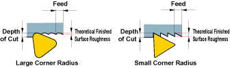

Theoretical Surface Roughness Calculator
Rev: 001

\[ h = \frac{f^2}{8 \times Re} \times 1000 \, (\mu m) \]
h : Surface Roughness (µm)
f : Feed per Revolution (mm/rev)
Re : Insert Corner Radius (mm)
Calculate h
µm
Calculate f
mm/rev
Calculate Re
mm
Calculate
* This calculator provides theoretical values only. Actual surface roughness may vary based on cutting conditions, tool wear, and material properties.